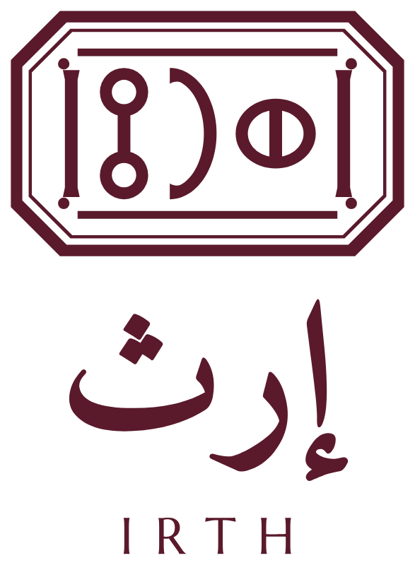

حزمة التطوير ١ثلاثة اتجاهات للشعارIRTH · BRAND BOOK
ثلاثة اتجاهات، والختم في قلبها
بيوت الفخامة الكبرى تبني هويتها على ختم، أو على اسم مرسوم لها، أو على شعار تراثي. هذه الثلاثة مطبّقة على ختم إرث، دون أن يتغيّر الختم نفسه.

الختم وتحته الاسم
ختم المسند، والاسم بخط نسخي جاهز، وIRTH بخط لاتيني آخر.

الختم الموحّد
الأجزاء الثلاثة بيد واحدة: اسم مرسوم بضربة الختم، ومعيّنات، وIRTH بأطراف المسمار.

ختم القمرية
قمرية صنعانية فوق الختم تجعله نافذة. شعار تراثي للمواضع الأعلى مقاماً.

نقش الشَّرعة
شبكة الشَّرعة وفي كل خانة واو المسند كحبّة زبيب. نقشٌ يُعرف به البيت.
إعداد وتصميم: م/ أحمد درهم حسين الفقيه — الشريك المؤسس ومدير المشروعU6